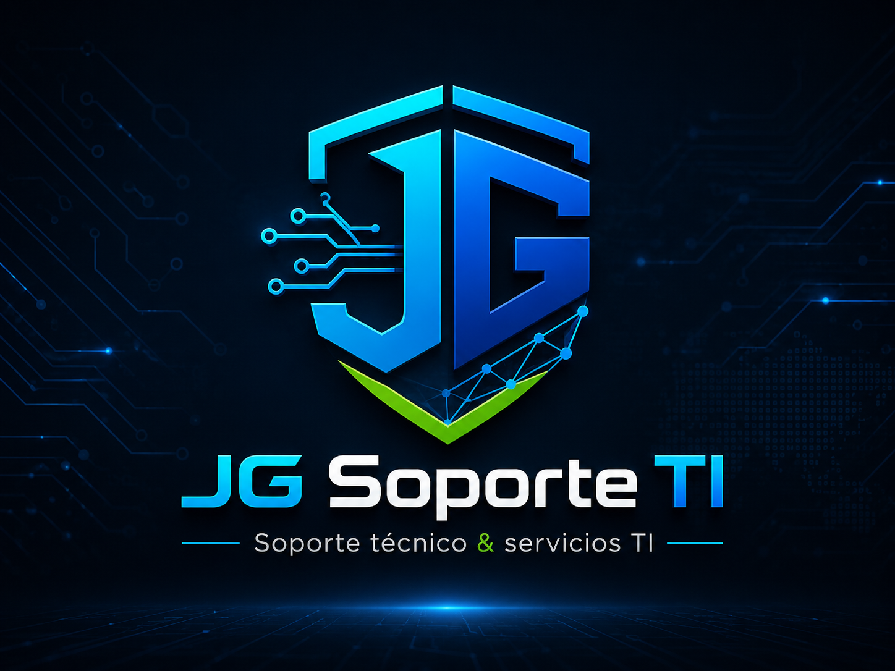

Formateo e instalación
Instalación limpia de Windows, drivers, programas básicos y configuración inicial.

Atención remota y presencial en Lima
Formateo, instalación de Windows y Office con licencia válida, actualización de drivers, limpieza de software, diagnóstico de lentitud, optimización de equipos y servicios TI empresariales en Windows Server, Active Directory, VMware/vCenter y AWS.
Problemas frecuentes
Antes de formatear, reviso el caso para saber si conviene optimizar, limpiar software, actualizar drivers, revisar disco/RAM o reinstalar Windows.
Servicios para personas
Soluciones para usuarios que necesitan mejorar, reparar o dejar estable su equipo.
Instalación limpia de Windows, drivers, programas básicos y configuración inicial.
Instalación y configuración con licencia válida del cliente.
Diagnóstico de consumo de CPU, RAM, disco, programas de inicio y errores.
Temporales, programas innecesarios, optimización de arranque y revisión general.
Validación e instalación de drivers correctos para mejorar estabilidad y rendimiento.
Revisión de disco, memoria RAM, temperatura, batería, rendimiento y recomendaciones.
Servicios destacados
Páginas específicas para que encuentres rápido el servicio que necesitas.
Precios referenciales
Precios orientativos para Perú. El monto final depende del estado del equipo, respaldo de información, modalidad, tiempo requerido y si se necesita visita presencial.
Instalación limpia, drivers principales y configuración inicial del sistema.
Desde S/ 80 No incluye licencia de Windows ni programas de pago.Revisión inicial de lentitud, errores, programas de inicio, CPU, RAM y disco.
Desde S/ 30 Ideal para validar si aplica solución remota.Temporales, programas innecesarios, inicio de Windows y ajustes básicos.
Desde S/ 50 Sin reinstalar el sistema operativo.Formateo con respaldo básico de información personal antes de reinstalar.
Desde S/ 100 Depende del volumen de archivos a respaldar.Instalación y configuración de Office con licencia válida del cliente.
Desde S/ 40 Activación de Licencia por periodos o Activación mediante licencia otorgada por clienteDiagnóstico presencial, revisión general y recomendación técnica.
Desde S/ 50 El traslado puede variar según distrito.Proceso de atención
Me cuentas el problema, modelo del equipo y si buscas atención remota o presencial.
Reviso síntomas, consumo de recursos, errores, disco, memoria, drivers y programas.
Te indico si conviene optimizar, limpiar, actualizar, respaldar o formatear.
Realizo el servicio y te dejo recomendaciones para evitar que el problema se repita.
Servicios empresariales
Servicios bajo evaluación para pequeñas empresas y entornos corporativos.
Administración, revisión de eventos, servicios críticos, rendimiento y validaciones PRE/POST.
Usuarios, grupos, DNS, DHCP, GPO, replicación, NTP y buenas prácticas.
Revisión de VMs, snapshots, recursos, VMware Tools y soporte operativo.
Soporte en instancias, snapshots, validaciones básicas y continuidad operativa.
Actualizaciones, control de reinicios, validaciones y cumplimiento operativo.
Seguridad base, PowerShell, inventarios, evidencias e informes técnicos.
Preguntas frecuentes
Sí. Muchos casos de limpieza de software, drivers, Office, revisión de lentitud y configuración pueden revisarse de forma remota.
Sí, previa coordinación y según zona. La visita puede tener costo adicional dependiendo del distrito.
Puede incluir respaldo básico, pero depende de la cantidad de información. Antes de formatear se valida el volumen y el estado del disco.
Sí, realizo instalación y configuración con licencia válida del cliente. No se incluyen licencias de pago dentro del servicio.
Sí. Los servicios empresariales como Windows Server, Active Directory, VMware/vCenter, AWS o parchado se cotizan bajo evaluación.
Sí. El servicio es independiente y se puede emitir recibo por honorarios cuando corresponda.
Sobre mí
Administrador de Sistemas Windows/Wintel con experiencia en soporte técnico, administración de servidores Windows, Active Directory, VMware/vCenter, AWS, parchado, hardening, diagnóstico de incidentes e informes técnicos. Mi enfoque es diagnosticar primero y recomendar la solución más conveniente, no solo formatear por formatear.
Contacto
Escríbeme por WhatsApp para revisar tu caso y validar si aplica atención remota o presencial.
Escribir por WhatsApp